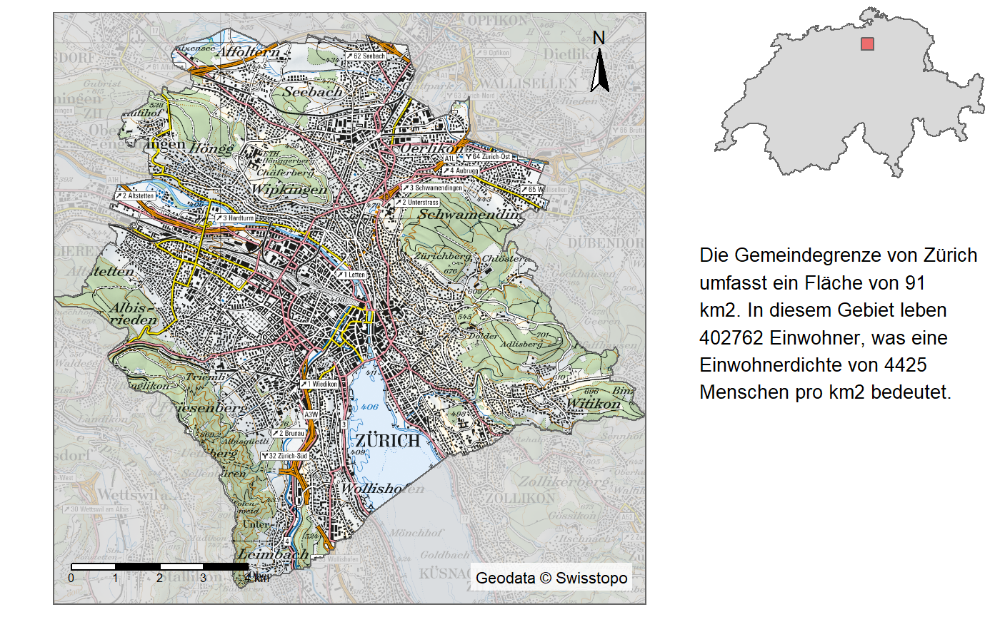
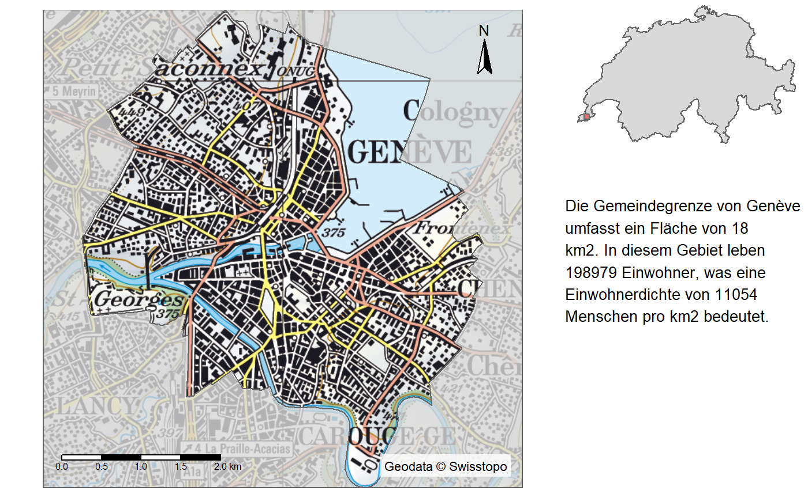
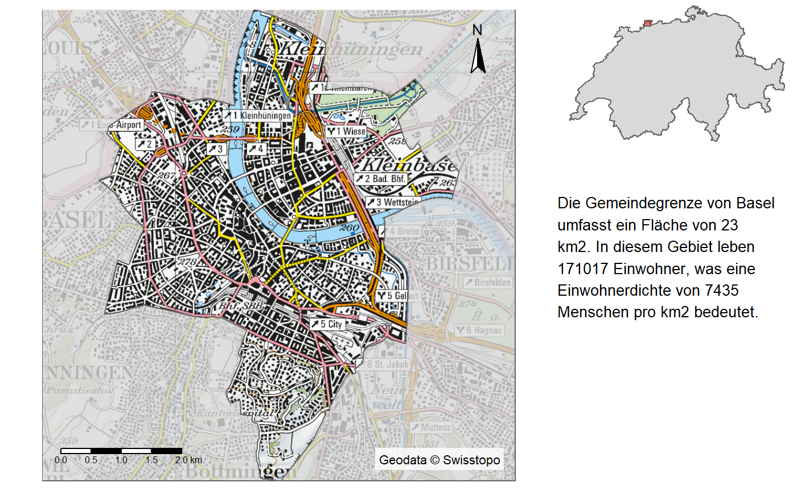
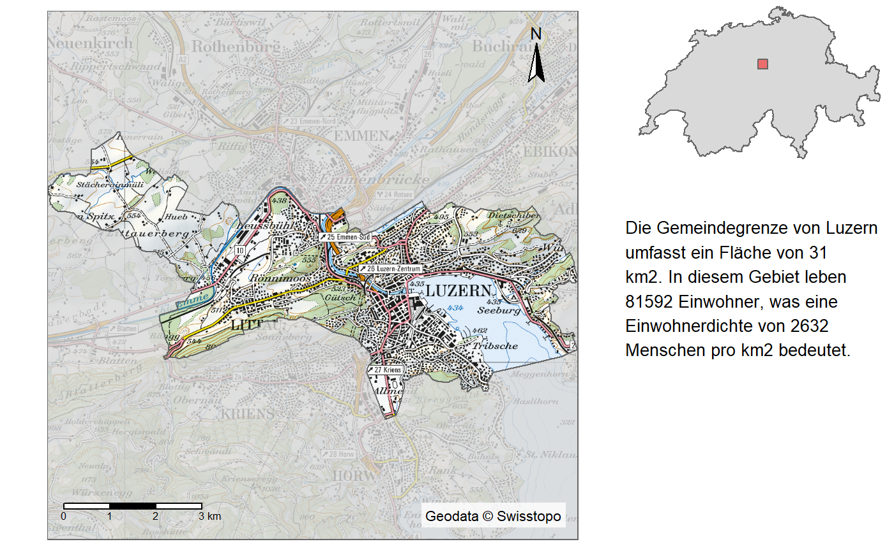
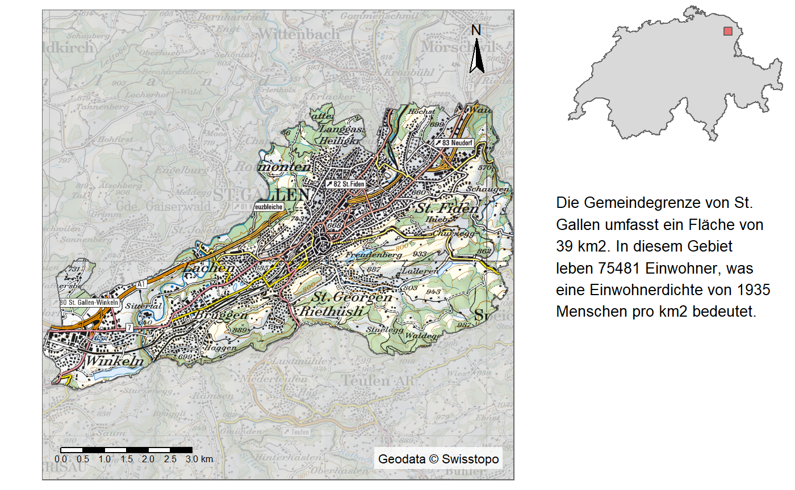
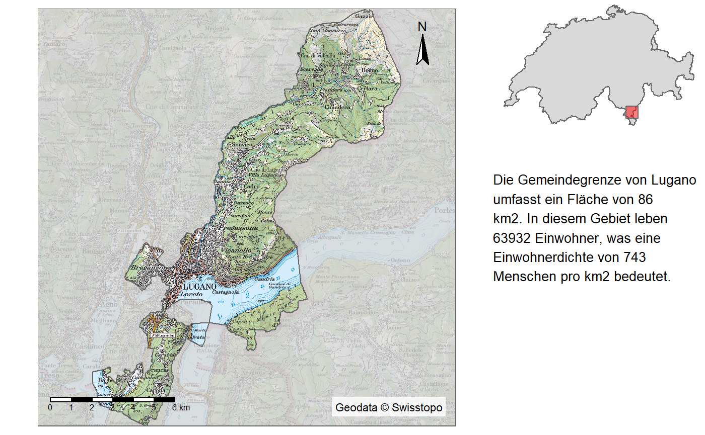
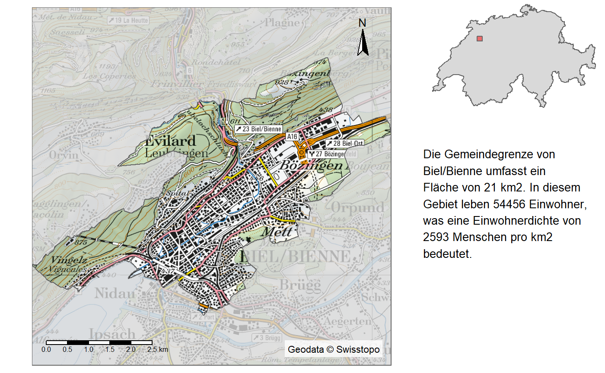

Here’s a little showcase on how this package can be used. Just some code, with not much explaination.
Initialize the file directory and load the dataset sample_polygons containing the largest 10 municipalities in Switzerland.
Calculate area and population density per municipality:
sample_polygons <- sample_polygons %>%
mutate(
area_km2 = as.integer(st_area(sample_polygons)/1000000),
dichte = EINWOHNERZ/area_km2
)Create an cookiecutter shape for each feature.
exts <- sample_polygons %>%
get_extent(.,x_add = 0,y_add = 0,method = "bbox",per_feature = T,asp = 1)
exts_large <- sample_polygons %>%
get_extent(.,x_add = 1000,y_add = 1000,method = "bbox",per_feature = T,asp = 1)
ext_inv <- exts %>%
st_geometry() %>%
map2(st_geometry(sample_polygons),~st_difference(.x,.y)) %>%
st_sfc() %>%
st_set_crs(2056)Create a (text) caption per municipality which can later be included as a caption.
caption <- st_set_geometry(sample_polygons,NULL) %>%
pmap_chr(function(NAME,EINWOHNERZ,area_km2,dichte,rank){
glue("Die Gemeindegrenze von {NAME} umfasst ein Fläche von {area_km2} km2. In diesem Gebiet leben {formatC(EINWOHNERZ,big.mark = ",")} Einwohner, was eine Einwohnerdichte von {as.integer(dichte)}
Menschen pro km2 bedeutet.")
})Run a loop over each feature calling get_raster() within the plot. This avoids saving all the rasters in a huge list.
data("switzerland")
for(i in 1:nrow(sample_polygons)){
extent_indicator <- tm_shape(switzerland) +
tm_polygons() +
tm_shape(exts_large[i,]) +
tm_polygons(col = "red", alpha = 0.5) +
tm_layout(frame = F) +
tm_view(alpha = 0)
mainmap <- tm_shape(get_raster(exts[i,],100)) +
tm_rgb() +
tm_shape(ext_inv[i])+
tm_polygons(alpha = 0.8,fill = "white") +
tm_scale_bar(position = c("left","bottom")) +
tm_credits(credits("swisstopo"),bg.color = "white",bg.alpha = 0.8) +
tm_compass(position = c("right","top")) +
tm_layout(frame = F)
grid.newpage()
print(mainmap, vp=viewport(0,0,0.7,1,just = c("left","bottom")))
print(extent_indicator, vp=viewport(1,1,0.3,0.3,just = c("right","top")))
grid.text(sapply(strwrap(caption[i],30,simplify = F), paste, collapse = "\n"),
x = 0.7,
y = 0.6,
vjust = 1,
hjust=0,
gp=gpar(fontsize=10))
}## Collective Size of Rasters to harmonize: 138.24516 (mb)## Collective Size of Rasters to harmonize: 64.0809 (mb)
## Collective Size of Rasters to harmonize: 61.425089 (mb)
## Collective Size of Rasters to harmonize: 130.175831 (mb)
## Collective Size of Rasters to harmonize: 137.074061 (mb)## Collective Size of Rasters to harmonize: 61.408868 (mb)## Collective Size of Rasters to harmonize: 67.787406 (mb)## Collective Size of Rasters to harmonize: 132.685739 (mb)
## Collective Size of Rasters to harmonize: 71.149182 (mb)
## Collective Size of Rasters to harmonize: 67.559457 (mb)